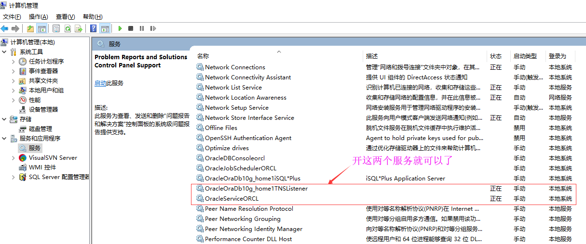
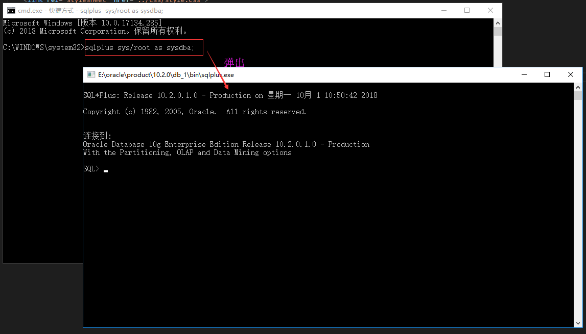
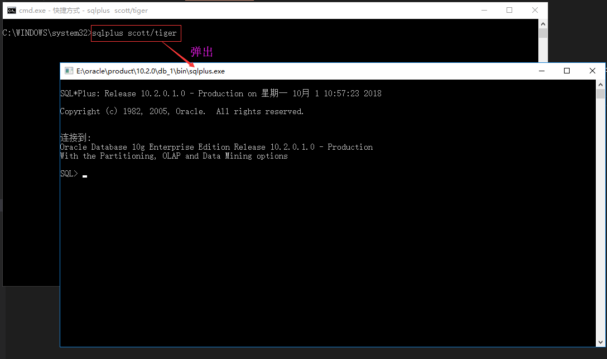
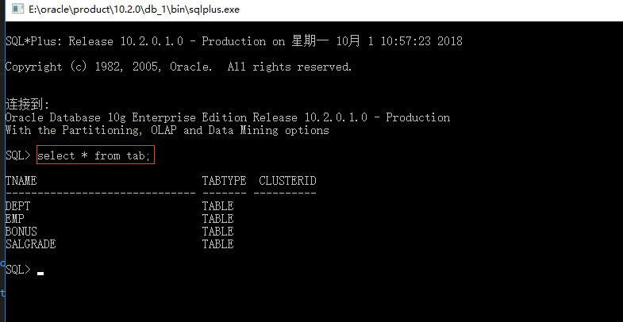
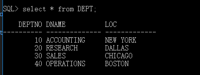
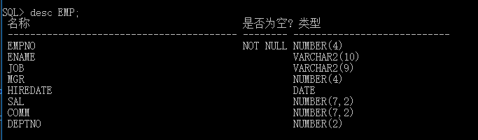

oracle命令行的简单玩法
玩oracle命令行只需要开启以下两个服务就可以了:

以管理员用户sys的身份登入（如果是超级管理员需要在用户名/密码后面加上 as sysdba,是以系统管理员的身份来登录的），在命令行窗口cmd敲入：sqlplus sys/你安装oracle时设置的密码 as sysdba

以scott用户身份登入（如果是普通用户，则不需要加上as sysdba的），在命令行窗口cmd敲入：sqlplus scott/tiger

查看属于当前登录用户下的所有的表，敲入命令：select * from tab;

查看一张表下的所有数据，敲入命令：select * from 你需要查看的表;

查看一张表的表结构，敲入命令：desc 表名;
